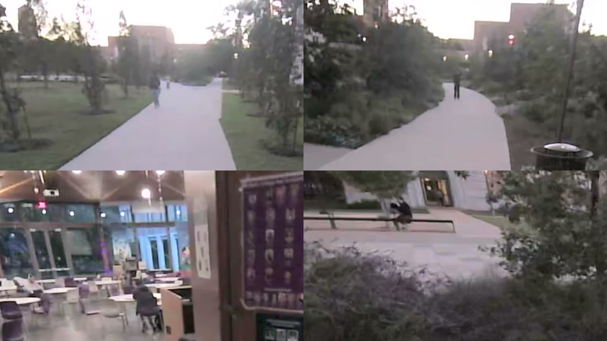

Clip test-1 (5-minute campus walk at dusk) · Nov 16, 2026 · gemini-3.5-flash, graded by gemini-3.1-flash-lite
98%
People caught
said “someone is here” on 92 of 94 labeled frames
13 / 13
Groups of people
every stretch with people in view was caught
±1
Head count
always within one person; exact 71% of the time
84%
Objects named
123 of 147 annotated objects; all 5 questions right
What we did
Got footage off the hat over USB and fixed the Mac link: it reconnects after an unplug, and root never runs files a user can edit.
Wrote ground truth for test-1: 32 people with enter and exit times, objects every 10 s, 5 questions, a weighted rubric.
Asked Gemini about 300 frames (one per second) and every rubric item; a second model graded the answers.
How it works
Hat
stereo video, 30 fps
→
Mac
USB download
→
Frames
1 per second
→
Gemini
who? how many? what?
→
Score
vs. labels + rubric
What we found
1
Finding people works. Only 2 misses, both tiny figures far away. Head counts were never off by more than one.
2
Our labels are the weak link, not the model. 30 frames scored as false alarms, but every one we checked shows a real person the labels missed: seated, far away, or seen early.
3
The rubric needs harder checks. All 5 questions right (79 of 85 covered points). Distance needs calibrated cameras.

People the model found that our labels missed. Left to right, top to bottom: 2:55, 3:45, 0:18, 4:16.
What's next
Goal: track how construction work progresses, from walkthroughs filmed with the hat. Finding people is close to solved. Following the same person over time, and measuring the space, come next.
Done
Spot people and objects
Per-frame detection and counts, scored against hand labels. Tooling is reusable for any new clip.
This week
Fix labels, compare models
Review the 30 disputed frames, update the labels, and rescore (no API cost). Run a second Gemini model for comparison.
Next
Track individuals
Score identity, not just presence: does each of the 32 people keep one ID from entry to exit? Our labels already hold each person's track. Then recognize the same person across clips and days. Agree on consent and privacy for workers first.
Later
Measure the space
Calibrate the two cameras for real distances, and use stereo + IMU to tell where each frame was taken.
Goal
Track construction progress
Walk the same site again and again, and compare visits area by area: what was installed, moved, or finished. Build a timeline for each zone.
Decisions to make
Paid Gemini key? Lifts the 20-requests-a-day limit, so frames go one per request and a stronger model can grade. Rough estimate: a dollar or two per full run.
Consent and privacy rules before identifying individual workers on site.
Footage plan: repeated walks of one real site, so progress can be measured over time.
Limits of this run. One clip, one model. We ran on Gemini's free tier (20 requests per model per day), so frames went 25 per request and the stronger Pro model couldn't grade. The labels are incomplete, so precision (75% as scored) is understated.